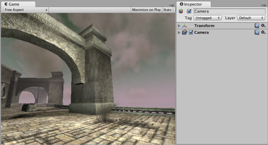

Image Effect Scripts
This group handles all Render Texture-based fullscreen image postprocessing effects. They are only available with Unity Pro. They add a lot to the look and feel of your game without spending much time on artwork.
All image effects make use of Unity's OnRenderImage function which any MonoBehavior attached to a camera can overwrite to accomplish a wide range of custom effects.
Image effects can be executed directly after the opaque pass or after opaque and transparent passes (default). The former behavior can very easily be acquired by adding the attribute ImageEffectOpaque to the OnRenderImage function of the effect in question. For an example of an effect doing this, have a look at the Edge Detection effect.
- Antialiasing (PostEffect)
- Bloom
- Camera Motion Blur
- Depth of Field
- Noise And Grain
- Screen Overlay
- Color Correction Lookup Texture
- Bloom and Lens Flares
- Color Correction Curves
- Contrast Enhance
- Crease
- Depth of Field 3.4
- Tonemapping
- Edge Detect Effect Normals
- Fisheye image effect
- Global Fog
- Sun Shafts
- Tilt Shift
- Vignetting (and Chromatic Aberration)
- Blur image effect
- Color Correction image effect
- Contrast Stretch image effect
- Edge Detection image effect
- Glow image effect
- Grayscale image effect
- Motion Blur image effect
- Noise image effect
- Sepia Tone image effect
- Screen Space Ambient Occlusion (SSAO) image effect
- Twirl image effect
- Vortex image effect
The scene used in above pages looks like this without any image effects applied:

Scene with no image postprocessing effects.
Scene with no image postprocessing effects.
Multiple image effects can be "stacked" on the same camera. Just add them and it will work.

Blur and Noise applied to the same camera.
Page last updated: 2012-11-16